송시헌, 이일여, 김소진, 박주원, 전다빈
Now, your turn!
NEWTON
NEWTON은 꿈꾸던 스포츠 콘텐츠를 내가 있는 곳에서 바로 도전할 수 있는 경험으로 바꿉니다. 바닥과 벽면에 펼쳐진 움직임의 단서를 따라가며, 보고만 있던 멋진 동작을 내 몸으로 시도하죠. 하체 웨어러블은 움직임의 감각을 조율해, 낯선 움직임도 내 플레이로 이어가게 돕습니다. 이제, 당신의 차례입니다!
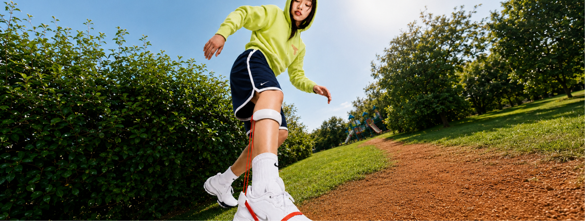
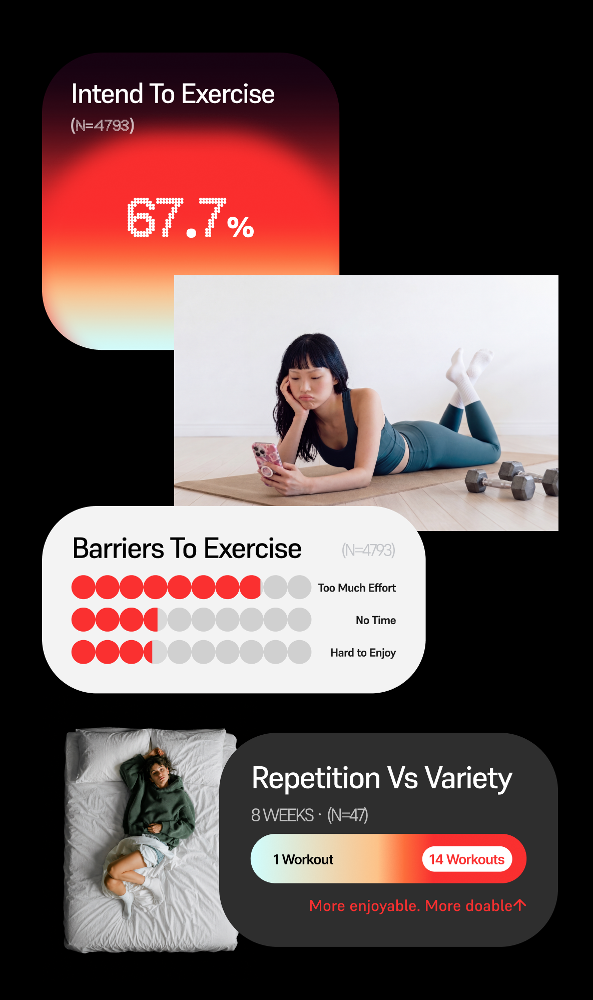
From Routine to Challenge
운동은 해야 하지만,
반복은 금방 지루해
운동이 필요하다는 사실은 누구나 알고 있습니다. 하지만 규칙적인 운동을 꾸준히 이어가는 일은 쉽지 않습니다. 운동은 귀찮고 해야 할 일처럼 느껴지고, 같은 루틴, 같은 자세, 같은 기록 확인은 금방 지루해집니다. 사람들이 멈추는 건 운동을 싫어해서가 아니라, 다시 움직이고 싶게 만드는 장면을 아직 만나지 못했을 뿐입니다.
Desk Research
신체활동 부족 근거
전 세계 성인의 약 31%, 약 18억 명은 권장 신체활동 수준을 충족하지 못한다
운동의 필요성은 누구나 알고 있지만, 실제 생활 속에서 충분히 움직이는 일은 여전히 어렵다. WHO는 2024년 발표자료에서 2022년 기준 전 세계 성인의 약 31%, 약 18억 명이 권장 신체활동 수준을 충족하지 못한다고 밝혔다.
World Health Organization. (2024, June 26). Nearly 1.8 billion adults at risk of disease from not doing enough physical activity.
반복 루틴 흥미 저하 근거
운동 의향은 있지만, 기존 운동은 귀찮고 어렵고 지루하게 느껴진다
운동을 시작하거나 지속할 의향은 있지만, 실제 행동으로 이어지는 과정에는 분명한 마찰이 있다. 두잇서베이 조사에서 응답자의 67.7%는 앞으로 운동을 시작하거나 지속할 의향이 있다고 답했지만, 운동을 하지 않는 이유로는‘귀찮아서’ 79.3%, ‘시간이 없어서’ 37.1%, ‘어렵고 지루해서’ 34.3%가 높게 나타났다. 이는 사람들이 운동을 완전히 거부하는 것이 아니라, 기존 운동 방식이 귀찮고 어렵고 지루하게 느껴질 때 쉽게 시작하지 못한다는 점을 보여준다.
두잇서베이. (2019, 8월 28일). [설문조사결과/여론조사결과] 운동, 할 생각 있으신지요? 두잇서베이 공식 블로그. https://doooit.tistory.com/648
반복 루틴 흥미 저하 근거
다양한 움직임은 운동을 더 긍정적인 경험으로 만든다
Dregney et al.(2025)은 저활동 18–25세 대학생 47명을 대상으로 8주간 실험을 진행했다. 다양한 운동 그룹은 14개의 HIIT 운동을 경험했고, 비교 그룹은 하나의 HIIT 운동을 반복했다. 그 결과 다양한 운동 그룹은 자율성, 운동 후 평온감, 신체활동 자기효능감에서 더 긍정적인 반응을 보였다. 이는 반복보다 다양한 움직임의 경험이 운동 참여를 더 긍정적으로 느끼게 할 수 있음을 보여준다.
Dregney, T. M., Thul, C. M., Linde, J. A., & Lewis, B. A. (2025). The impact of physical activity variety on physical activity participation. PLOS ONE, 20(5), e0323195.
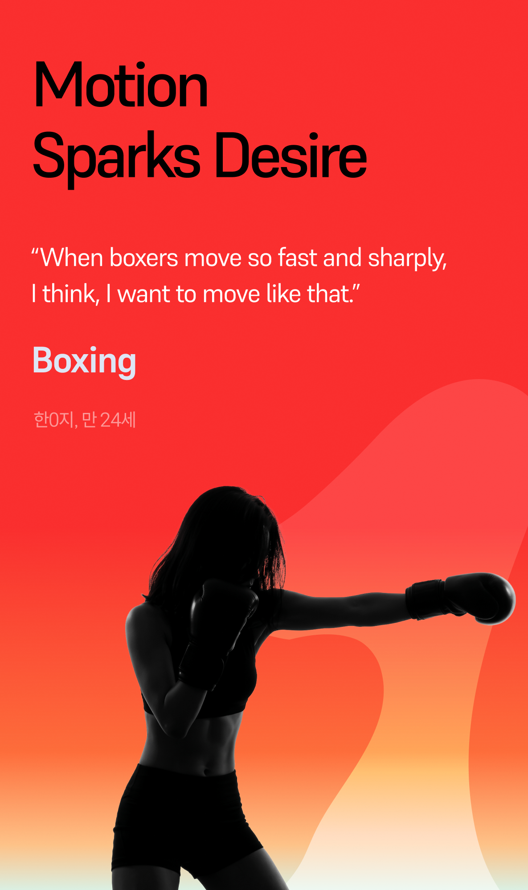
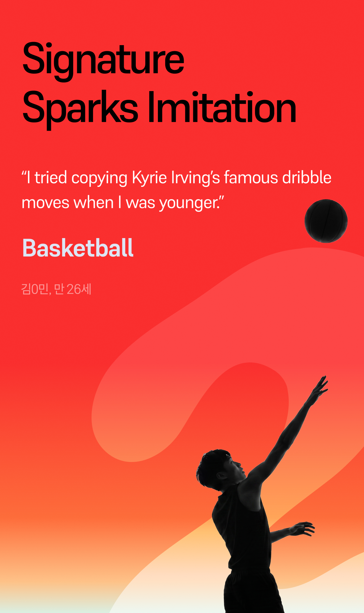
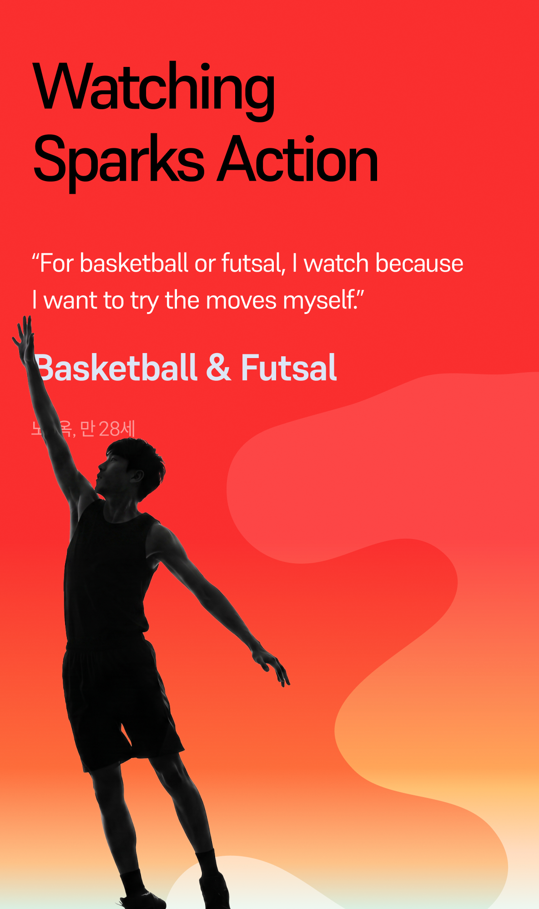
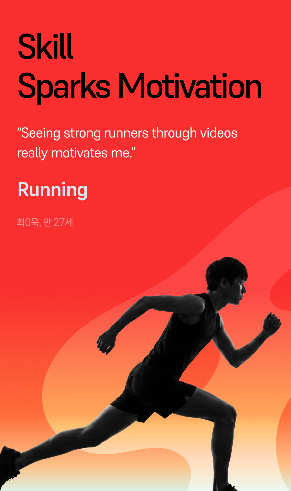
Challenge Spark
새로운 움직임은
다시 몸을 움직이게 한다
“나도 해보고 싶다”는 순간, 운동은 다시 뜨거워집니다. 경기 막판의 스텝백, 링 위를 가르는 풋워크, 결승선까지 무너지지 않는 러너의 페이스처럼 마음을 뺏는 움직임은 보는 순간 몸을 당깁니다. NEWTON은 그 장면을 저장에서 멈추지 않고, 지금 내가 있는 곳에서 바로 시도해볼 수 있는 도전으로 바꿉니다.
FieldResearch-Interview
Interview, (N=8) 2026.06.09 - 2026.06.12 4일간 진행
Needs : 멋진 움직임은 저장에서 끝나지 않고, 직접 해보고 싶은 도전으로 이어진다
유명 선수의 드리블은 따라 해보고 싶은 장면이 된다
“카이리 어빙이라고 NBA 선수가 있는데, 그 사람이 드리블을 정말 잘합니다.”초등학생 때 유명한 동작을 몇 번 따라 해봤어요.”
농구 / 전0석
잘하려고 보는 영상과, 따라 하려고 보는 영상은 다르다
“농구나 풋살 같은 것들은 약간 따라 하려고 보는 것 같아요.”
농구·풋살 / 노0옥
빠르고 멋진 복싱 동작은 바로 따라 하고 싶은 욕망을 만든다
“복싱 경기나 쉐도우 복싱 연습하는 사람들이 많이 뜨거든요. 그런 사람들 보면 진짜 멋지게 슈슈슈슉, 손이 안 보이게 치는 경우가 있는데 그런 걸 따라 하고 싶다고 많이 느끼죠. 저렇게 하고 싶다.”
복싱 / 한0지
빠르고 멋진 복싱 동작은 바로 따라 하고 싶은 욕망을 만든다
“러닝화 추천이나 알고리즘을 통해 러닝 영상을 찾아보는 습관이 생겼어요. 잘 뛰는 러너들을 보면서 자극을 받죠.”
러닝 / 최0욱
Painpoints멋진 움직임은 자극이 되지만, 내 몸으로 해내는 순간에는 막막함이 생긴다
숙련자의 자세는 따라 하고 싶지만, 부상 걱정이 먼저 든다
“숙련자의 자세를 먼저 하면 다치겠다는 생각이 제일 먼저 들었어요. 보강 운동을 한 이후에 시도해 봐야겠다는 마음이 있습니다.”
배구 / 임0린
똑같이 따라 해도, 몸에서 맞는 자극이 느껴지지 않는다
“똑같이 따라 하는데 자극점이 안 느껴질 때가 많아요. 그런 경우는 보통 자세가 잘못돼서입니다.”
복싱 / 한0지
혼자서는 내가 제대로 하고 있는지 판단하기 어렵다
“이걸 내가 잘하고 있는지, 혼자서는 판단이 안 돼요. 결국 그 사람한테 직접 배우지 않는 이상 답이 없는 느낌이에요.”
복싱·무에타이 / 윤0준
멋진 기록은 자극이 되지만, 내 수준과의 격차가 먼저 느껴진다
“따라갈 엄두가 잘 안 나요. 이 사람 기록이 일반인으로서 따라 하기가 너무 힘든 수준이어서 내가 할 수 있을까? 막막함이 먼저죠.”
러닝 / 최0욱
DeskResearch
새로움 기반 지속 근거
새로운 운동이나 익숙한 운동의 변주는 흥미와 즐거움을 높일 수 있다
Lakicevic et al.(2020)은 운동 루틴에 새로운 운동을 도입하거나 익숙한 운동에 변주를 주는 것이 참여자의 흥미와 즐거움을 높이고, 신체활동 지속성을 강화할 수 있다고 정리했다. 즉, 운동을 다시 시작하게 만드는 것은 더 엄격한 루틴이 아니라, “한번 해보고 싶다”고 느끼게 하는 새로운 움직임일 수 있다.
Lakicevic, N., Gentile, A., Mehrabi, S., Cassar, S., Parker, K., Roklicer, R., Bianco, A., & Drid, P. (2020). Make fitness fun: Could novelty be the key determinant for physical activity adherence? Frontiers in Psychology, 11, 577522. https://doi.org/10.3389/fpsyg.2020.577522
자율적 동기 근거
운동 지속은 의무감보다 즐거움과 유능감에 더 가깝다
Ryan et al.(1997)은 운동 지속이 건강이나 외모 같은 외부 목적보다 즐거움, 유능감, 사회적 상호작용 같은 내적 동기와 더 깊게 연결된다고 설명했다.
즉, 운동을 오래 이어가게 만드는 힘은 “해야 한다”는 압박보다 “재밌다”, “해보고 싶다”, “내가 해낼 수 있다”는 감각에 가깝다.
Ryan, R. M., Frederick, C. M., Lepes, D., Rubio, N., & Sheldon, K. M. (1997). Intrinsic motivation and exercise adherence. International Journal of Sport Psychology, 28(4), 335–354.
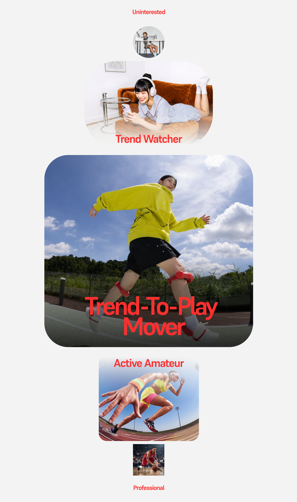
For Those Who Turn Trends Into Play
Trend-to-Play Mover
20–30대 라이트 액티브 유저
NEWTON의 타깃은 멋진 움직임에 끌리고, 내가 있는 곳에서 바로 도전하고 싶은 라이트 액티브 유저입니다. 러닝 크루, 복싱 숏폼, 농구 하이라이트를 보며 해보고 싶다고 느끼는 사람들. 이들에게 운동은 숙제가 아니라, 저장하고 따라 해보고 싶은 추구미입니다. NEWTON은 그 추구미를 내가 있는 곳에서 바로 시작할 수 있는 도전으로 바꿉니다.
Trend Report
Gen-Z 스포츠 정체성
스포츠는 Gen-Z의 취향과 정체성을 드러내는 수단이 되고 있다
캐릿은 Z세대가 자신이 하는 스포츠와 보는 스포츠를 통해 정체성을 드러내고, 스스로를 표현하려는 욕구를 “스포츠 자아”로 설명한다. 기사에서는 Z세대가 인스타그램 프로필에 러닝, 헬스, 수영, 축구처럼 자신이 하는 스포츠와 보는 스포츠를 적어두며, 스포츠를 자신을 표현하는 수단으로 활용한다고 정리했다.
또한 인터뷰에서는 “스포츠가 추구미를 드러내는 수단 중 하나가 됐다”는 발화를 보이며, 이는 운동이 단순한 활동을 넘어, 내가 어떤 움직임과 라이프스타일을 좋아하는지 보여주는 방식이 되고 있음을 보여준다.
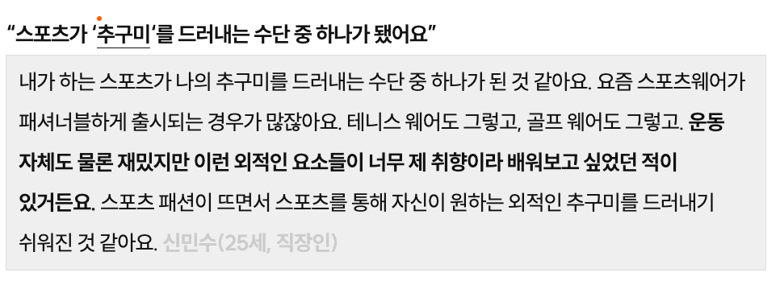
캐릿. (2024, 6월 13일). 내가 즐기는 스포츠가 곧 정체성? ‘스포츠 자아’ 가진 Z세대 공략법. https://www.careet.net/1394
‘노마드 피트니스’의 등장
운동은 헬스장 밖, 내가 있는 곳으로 확장되고 있다
The Scoop은 노마드 피트니스를 건강을 챙기면서도 제약 없는 삶을 원하는 사람들이 추구하는 라이프스타일로 소개한다. 핵심은 운동을 헬스장이나 정해진 시설에만 묶어두는 것이 아니라, 한강변이든 집이든 내가 있는 곳을 운동 공간으로 바꾸는 것이다.
이는 운동을 특정 시간과 장소에 맞추기보다, 지금 있는 공간에서 바로 시작하고 싶은 Gen-Z의 움직임과 연결된다. NEWTON은 Station Core와 Projection Unit을 통해 책상 앞, 방 안, 거실, 야외처럼 사용자가 있는 곳에서 Challenge Pack을 바로 시도할 수 있게 한다.
김하나. (2026, 4월 29일). 헬스장이나 한강변이나… 내가 있는 곳이 운동장: 노마드 피트니스. The Scoop. https://www.thescoop.co.kr/news/articleView.html?idxno=310039
뉴턴의 User Persona
뉴턴의 Mover들
NEWTON은 운동을 이미 잘하는 사람이 아니라,멋있는 움직임을 보면 따라 해보고 싶지만 혼자 시작하기 어려운 사람들을 타깃으로 합니다.
Persona A. Trend-to-Play Mover
트렌드를 보고 움직이고 싶어지는 입문자
숏폼, 릴스, 친구 인증처럼 트렌디한 운동 장면에 빠르게 반응하지만,혼자 시작할 방법이 없어 쉽게 멈추는 유형입니다. NEWTON은 이들에게 짧고 가벼운 첫 진입과 집 안에서도 부담 없는 시작점을 제공합니다.
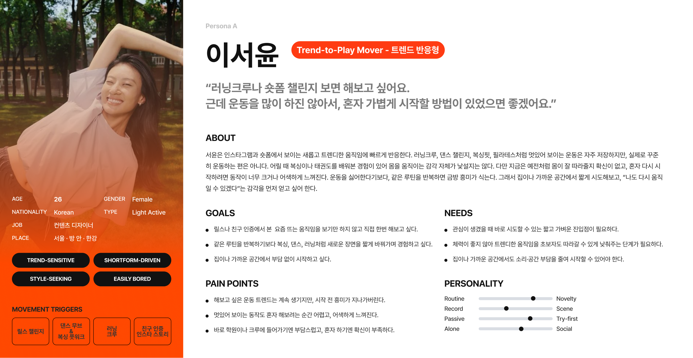
Persona B. Watch-to-Play Mover
보는 스포츠를 내 몸으로 해보고 싶은 도전자
경기나 하이라이트 속 멋진 움직임을 보면 직접 따라 해보고 싶지만, 헬스장 루틴이나 반복 운동에는 쉽게 지루함을 느끼는 유형입니다. NEWTON은 이들에게 스포츠 장면을 실제 움직임으로 번역해보는 도전 경험을 제공합니다.
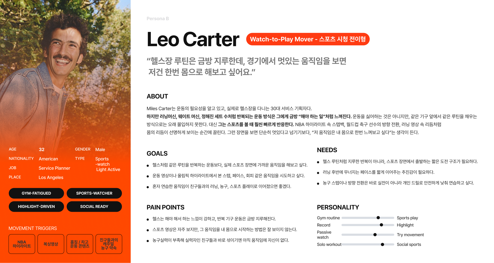
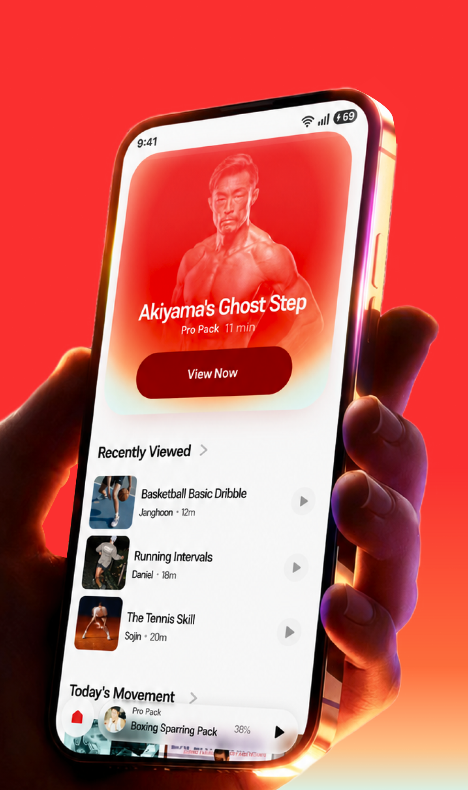
Solution
움직임도 이제 고르고,
구독하는 경험
프로의 스텝, 크리에이터의 루틴, 동호회 고수의 한 수까지.
따라 해보고 싶은 움직임은 NEWTON에서 Challenge Pack이 됩니다. 지금 끌리는 Pack을 고르면, NEWTON은 그 움직임을 따라 해볼 수 있는 단서로 풀어냅니다. 보고 저장한 움직임은 벽면과 바닥, 야외 지면 위로 펼쳐지고 내가 있는 공간에서 바로 시작됩니다.
NEWTON 감각 Pack이 운동 경험이 되는 구조
움직임을 저장하는 데서 끝나지 않고, 몸으로 익히는 경험으로
NEWTON은 숙련자의 움직임을 감각 Pack으로 만들고, 오늘의 몸과 환경에 맞는 실행값으로 번역한 뒤, 운동 중 수행을 읽어 다음 세션으로 이어집니다.
01 따라 하고 싶은 감각의 설계
프로 선수, 크리에이터, 숙련 사용자의 움직임에서 Pack의 원천을 찾습니다. 영상, 센서, 코칭 음성까지 모아 권리와 품질, 안전성을 확인하고, 발 순서, 방향, 리듬, 착지, 회복처럼 움직임의 핵심만 남깁니다. 흩어진 데이터가 따라 하고 싶은 감각 Pack으로 정리됩니다.
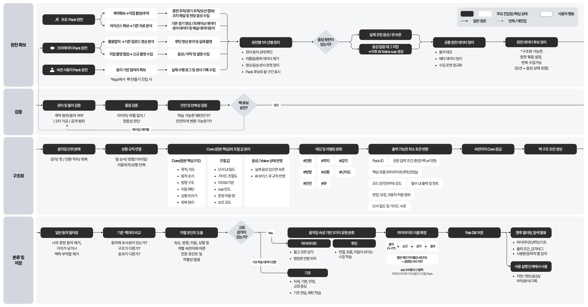
02 오늘의 몸으로 바뀌는 실행값
Pack 속 숙련자의 리듬과 시그니처는 유지됩니다. 대신 내가 정한 난이도에 따라 지면 UI와 벽면 UI의 단서 밀도, 미리보기, 음성 큐가 달라집니다. 여기에 오늘의 컨디션과 선택한 모드가 더해지면, 하체 웨어러블은 충격을 줄이거나, 부하를 더하거나, 추진을 보조하며 지금 내 몸에 맞는 실행값을 만듭니다.
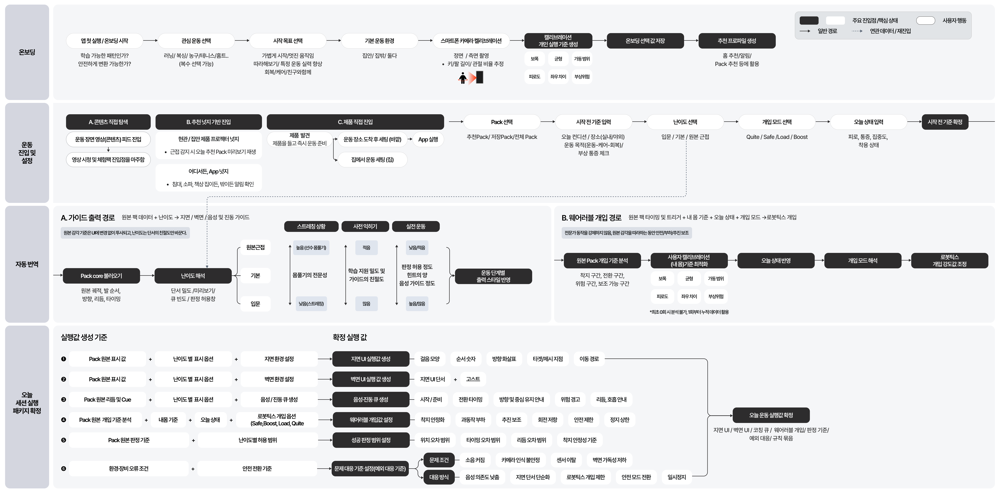
03 다음 세션을 준비하는 수행 기록
운동 중에는 발 위치, 리듬, 착지, 균형, 반응을 읽습니다. Pack을 얼마나 잘 살렸는지, 얼마나 안정적으로 움직였는지 보고, 위험한 순간에는 안전 개입이 먼저 작동합니다. 세션이 끝나면 기록은 리포트와 다음 추천, 힌트 양, 사전 익히기 시간, 웨어러블 강도 조정으로 이어집니다.
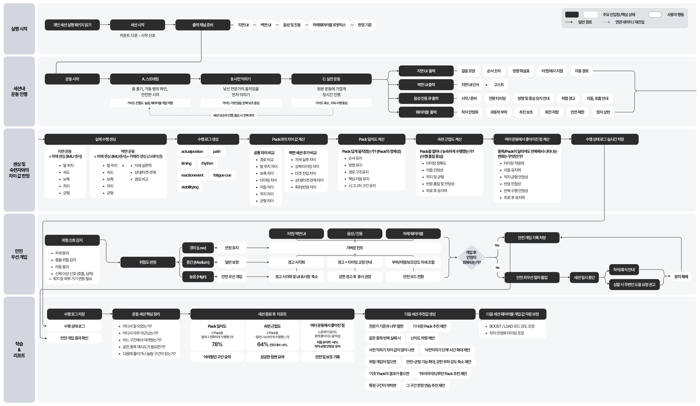
NEWTON의 차별화 포인트
따라하고, 조정하고, 이어가는 경험의 차별화
기존 제품은 각각 바닥에 보여주기, 움직임 기록하기, 힘 보조하기에 강점을 가집니다. NEWTON은 이 기능들을 따로 제공하지 않고, 운동 감각 Pack을 중심으로 시각 가이드·수행 데이터·웨어러블 개입을 하나의 운동 경험으로 연결합니다. 즉, 차별점은 숙련자의 움직임을 내 몸과 실제 지면 위에서 따라 할 수 있는 경험으로 번역한다는 점입니다.
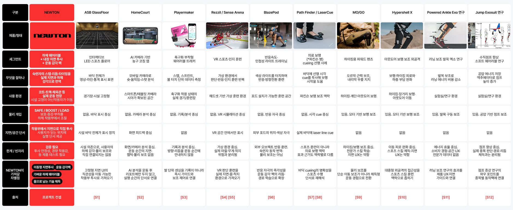
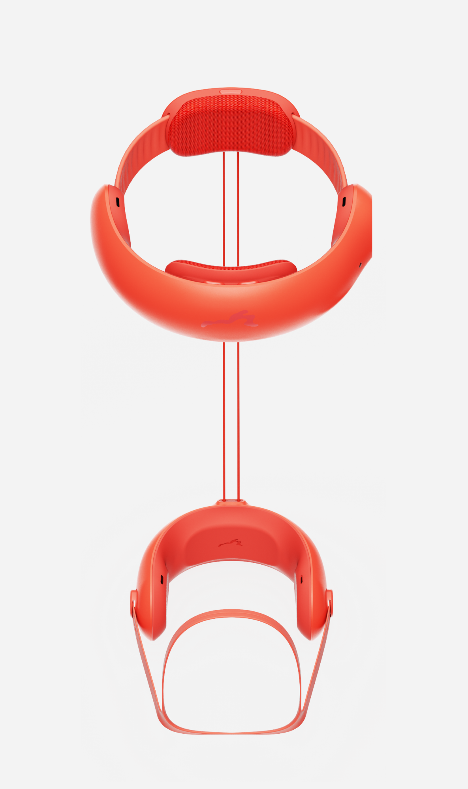
Wearable Robotics
내 플레이를 깨우는
하체 웨어러블 로보틱스
낯선 움직임을 시작할 때, NEWTON은 하체의 보폭과 착지, 균형과 피로 흐름을 읽습니다. 흔들릴 때는 Pace On으로 안정적으로 이어가고, 리듬이 꺼질 때는 Boost On으로 다음 발을 밀어줍니다. 더 깊은 반복이 필요할 때는 Press On으로 저항을 더하고, 집 안에서는 Quiet On으로 충격과 발소리를 낮춥니다. 움직임은 더 안전하게, 도전은 더 가볍게 시작됩니다.
NEWTON의 4가지 모드
뉴턴의 4가지 모드
NEWTON은 하체 상태와 운동 환경에 따라 Pace On, Boost On, Press On, Quiet On으로 전환됩니다. 기본값은 균형을 안정시키는 Pace On이며, 다른 On에서도 안전 감지와 무리 방지 기준은 항상 유지됩니다. 사용자는 안정, 추진, 저항, 저소음이라는 서로 다른 보조를 몸에 무리 없이 경험할 수 있습니다.
*Newt{on} ←에서 착안한 모드 이름, Mode라는 단어를 사용하지 않고, on을 사용했다.
| Mode | 제품 의미 | 개입 타이밍 | 기구적 개입 | 사용자 체감 |
|---|---|---|---|---|
| Pace On | 낯선 움직임을 무리 없이 시작하게 하는 기본 안전 모드 | 착지, 방향 전환, 균형이 흔들리는 순간 | 발목과 하체 움직임의 과한 범위를 잡고, 와이어 장력으로 흔들림을 제한 | 발목이 덜 꺾이고, 착지와 방향 전환이 안정적으로 느껴짐 |
| Boost On | 반복 구간에 일부러 묵직한 저항을 더하는 훈련 모드 | 다리를 앞으로 내밀거나 스윙하는 구간 | 와이어가 순순히 풀리지 않도록 역방향 브레이크를 걸어 저항 생성 | 모래주머니를 찬 듯 묵직하게 잡히고, 반복 후 몸이 더 가볍게 느껴짐 |
| Press On | 꺼지는 리듬을 다시 앞으로 이어주는 추진 보조 모드 | 발뒤꿈치가 지면에서 떨어지고 앞으로 치고 나가는 순간 | 와이어 장력으로 발목 중심축을 보조해 뒤꿈치를 위로 끌어올림 | 다음 발이 더 쉽게 나가고, 후반 리듬이 끊기지 않음 |
| Quiet On | 집 안에서도 사뿐히 움직이게 하는 실내 착지 모드 | 발이 지면에 닿기 직전부터 뒤꿈치가 완전히 닿는 순간 | 와이어를 미세하게 풀어 체중 일부를 위에서 받치고 착지를 부드럽게 감속 | 발을 쿵 찍지 않고 조용히 내려놓는 느낌 |
어떤 운동이, 어떻게 가능한가요?
어떤 운동이, 어떻게 가능한가요?
하체 웨어러블의 IMU센서는 디딤과 착지, 회전과 보폭을 직접 읽습니다. 스테이션에 존재하는 카메라센서와 개인 3D 모델을 더하면 상체 움직임과 체형 기반 비교까지 확장될 수 있습니다.
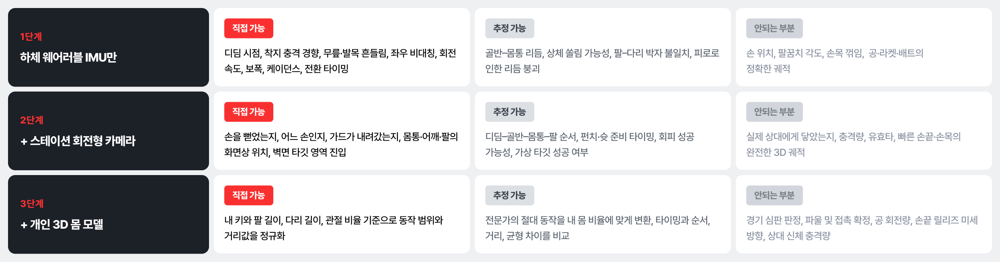
집 안에서 익히고, 집 밖에서 확인합니다
집 안에서는 프로젝션으로 발 순서와 리듬, 균형을 먼저 익히고, 집 밖에서는 공과 코트, 경사와 파트너가 만드는 실제 감각을 확인합니다.
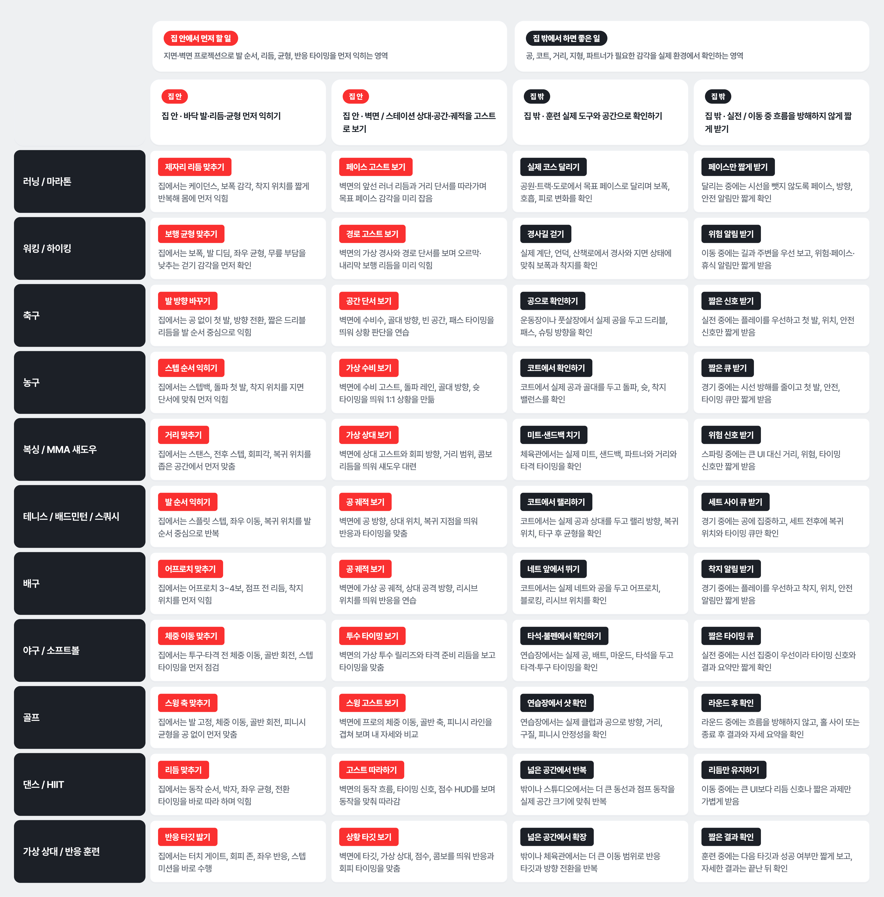
제스쳐 방식
음성과 발 두 번 탭으로 세션을 제어하고, 햅틱으로 입력을 확인합니다. 세부 설정은 앱과 워치에서, 긴급 정지는 웨어러블의 물리 버튼으로 처리합니다.
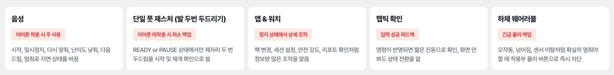
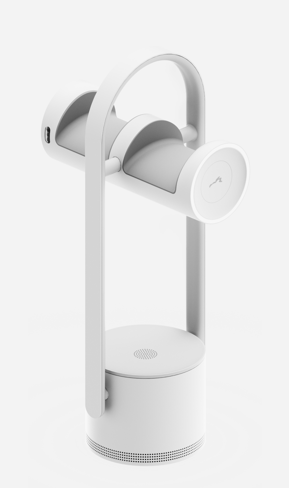
Station
도전이 시작될
자리를 만드는 스테이션
스테이션은 하체 웨어러블을 충전하고 보관하며, 착용 전 준비 상태를 정돈하는 거치형 허브입니다. 운동을 시작할 때는 웨어러블의 상태를 확인하고, 프로젝션 유닛이 안정적으로 놓일 위치와 각도를 잡아줍니다. NEWTON의 다음 움직임은 이 자리에서 준비되고, 하체 웨어러블을 착용하는 순간 오늘의 도전으로 이어집니다.
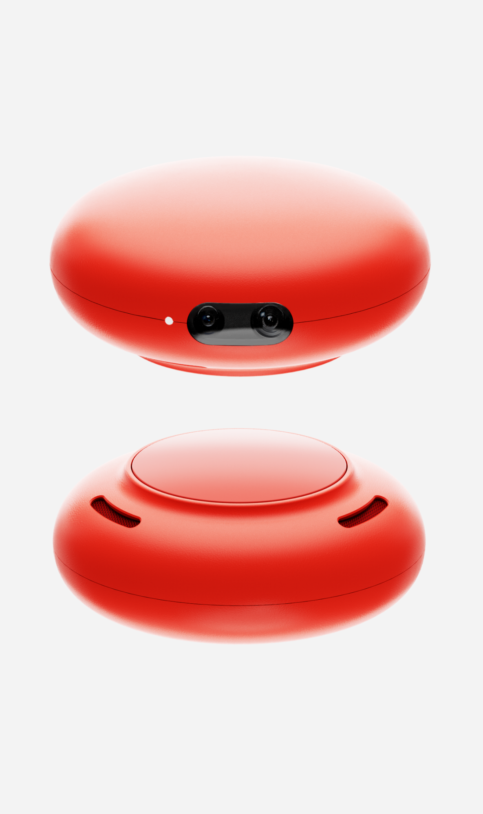
Projection Unit
공간을 도전의 필드로
바꾸는 프로젝션 유닛
프로젝션 유닛은 Challenge Pack의 움직임을 화면 밖으로 꺼내, 내가 있는 공간 위에 펼칩니다. 책상 앞의 시작 넛지, 집 안의 벽면 가이드, 밖에서의 지면 위 스텝까지. 발 위치와 리듬, 방향, 위험 범위는 따라 해볼 수 있는 단서로 눈앞에 펼쳐집니다. 몸을 여는 스트레칭부터 동작 습득, 실전 연습까지. 화면 속 움직임은 어디에 있든 내 몸으로 시작되는 플레이로 이어집니다.
Tech Research- Projection Unit의 타당성
왜 NEWTON은 움직임을 바닥과 벽면에 투사하는가?
Needs : NEWTON은 화면을 더 씌우지 않고, 공간을 운동 인터페이스로 바꾼다
운동 중 사용자는 바로 알고 싶습니다.다음 발을 어디에 둘지, 어느 방향으로 움직일지, 어떤 리듬으로 이어갈지
NEWTON은 이 단서를 앱 화면이나 고스펙 전용 안경에 가두지 않습니다. 대신 사용자가 실제로 움직이는 바닥과 벽면 위에 놓습니다. 운동 전에는 스테이션의 짧은 투사로 “해볼까?”를 만들고, 벽면은 숙련자의 움직임을 이해하게 하고, 지면은 그 움직임을 발로 따라가게 합니다.
즉, NEWTON의 빔프로젝터는 넛지 → 이해 → 실행으로 이어지는 공간 인터페이스입니다.
Painpoint : 운동을 위해 또 하나의 화면을 착용할 필요는 없다
🕶️ 운동 중 얼굴에 쓰는 장비는, 정보보다 먼저 부담이 될 수 있습니다
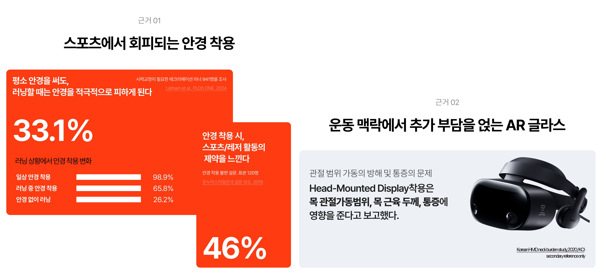
운동 중 필요한 건 더 큰 화면이 아닌 사용자가 바로 움직일 수 있게 하는 가벼운 단서입니다.
평소 안경을 쓰는 사람도 러닝할 때는 착용을 줄이는 경향이 있습니다. 시력교정이 필요한 레크리에이션 러너 941명을 조사한 연구에서, 일상에서는 안경 착용 비율이 높았지만 러닝 중에는 안경 착용 비율이 낮아졌습니다.[1] 이는 운동 중 얼굴에 착용하는 장비가 안전성, 착용감, 활동 제약으로 느껴질 수 있음을 보여줍니다.
HMD 역시 운동 전용 인터페이스로 가져가기에는 부담이 있습니다. 국내 연구는 HMD 착용이 목 관절가동범위, 목 근육 두께, 통증에 영향을 줄 수 있다고 보고했습니다.[2] 그래서 NEWTON은 운동을 위해 또 하나의 고스펙 안경을 씌우지 않습니다.
하체 웨어러블은 몸을 읽고 돕고, 시각 단서는 사용자가 움직일 공간 위에 둡니다.
Evidence 01 : 바닥 단서는 실제 발 움직임을 유도할 수 있다
👣 지면 프로젝션은 보는 화면이 아닌, 발을 놓게 만드는 단서로
기존 허리 장착형 프로젝터 연구는 걷는 중 작은 모바일 화면을 계속 봐야 하는 불편함을 줄이기 위해, 정보를 바닥에 투사하는 방식을 제안했습니다. 보행 주기에 맞춰 투사 이미지를 안정화했고, 사용성 테스트에서 가시성이 좋아졌습니다.[1] (J-STAGE)
또 다른 연구는 사용자가 걷는 동안 보폭 정보를 바닥에 투사하는 자가 보행 훈련 시스템을 제안했습니다. 대상은 보조 없이 걸을 수 있는 건강한 고령자 10명, 76–91세였고, 바닥의 시각 단서가 보폭 조절에 효과가 있으며 장치 수용성도 있음을 확인했습니다.[2] (ResearchGate)
이를 통해 지면 UI는 장식이 아니라 발 위치와 보폭을 조정하게 만드는 시각 단서가 될 수 있음을 확인했습니다.
근거
[1] Tajimi, K., Uemura, K., Kajiwara, Y., Sakata, N., & Nishida, S. (2011). Stabilization method based on walking periodicity for floor projection by a hip-mounted projector. Transactions of the Virtual Reality Society of Japan, 16(2), 161–169.
https://doi.org/10.18974/tvrsj.16.2_161
[2] Murata, S., Suzuki, M., & Fujinami, K. (2013). A wearable projector-based gait assistance system and its application for elderly people. Proceedings of the 2013 ACM International Joint Conference on Pervasive and Ubiquitous Computing, 143–152.
Evidence 02 : 투사된 타깃은 발 조절 훈련에 쓰이고 있다
🎯 지면 위 타깃은 “어디로 움직일지”를 가장 먼저 보여준다
C-Mill 연구는 treadmill 위에 타깃과 장애물을 투사해, 사용자가 그 단서에 맞춰 발을 조정하도록 훈련했습니다. 뇌졸중 만성기 환자 16명은 10회 훈련 후 보행·균형 지표가 개선됐고, 신체활동량도 19.6% 증가했습니다.[1] (MJS Publishing)
NEWTON은 이 원리를 스포츠 입문 맥락으로 확장합니다. 사용자는 설명을 읽는 대신, 발밑에 나타난 경로, 위치, 리듬을 따라 움직임을 시작합니다.
근거
[1] Heeren, A., van Ooijen, M. W., Geurts, A. C. H., Day, B. L., Janssen, T. W. J., Beek, P. J., Roerdink, M., & Weerdesteyn, V. (2013). Step by step: A proof of concept study of C-Mill gait adaptability training in the chronic phase after stroke. Journal of Rehabilitation Medicine, 45(7), 616–622.
Evidence 03 : 시각 단서는 하체 움직임의 질에도 영향을 줄 수 있다
🦵 발밑 단서, 보폭뿐 아니라 안정성과 발 들림을 보여주는 신호
2023년 연구는 파킨슨병 환자에게 wearable laser visual cue를 제공했을 때, 보행 패턴과 안정성이 즉시 개선됐다고 보고했습니다. 시각 단서가 있는 조건에서 보폭은 길어지고, 발끝 들림은 높아지고, 양발 지지 시간은 줄었습니다.[1] (Frontiers)
이를 통해 발밑의 시각 단서가 하체 움직임을 바꿀 수 있다는 점은 분명히 보여주며, NEWTON은 이 가능성을 재활이 아니라, 스포츠 입문과 도전 경험으로 가져옵니다.
근거
[1] Zhang, W., Shi, Y., Han, Y., Yan, S., Song, W., Cui, G., & Xiang, J. (2023). Effects of wearable visual cueing on gait pattern and stability in patients with Parkinson’s disease. Frontiers in Neurology, 14, 1077871.
Evidence 04 : 벽면 투사는 숙련자의 움직임을 이해시키는 화면이 된다
🧍 복잡한 움직임은 말보다 먼저
NEWTON의 벽면 UI는 전문가의 리듬, 자세 흐름, 상대의 공격 범위처럼 사용자가 먼저 이해해야 할 움직임의 맥락을 보여줍니다.
관찰 학습 연구에서도 복잡한 움직임은 시각 모델을 통해 더 잘 전달될 수 있다고 봅니다. PLOS ONE 연구는 observational learning이 복잡한 움직임을 전달하는 효과적인 방식이며, 학습자가 필요한 움직임의 기준 이미지인 perceptual blueprint를 형성하는 데 도움을 줄 수 있다고 설명했습니다.[1] (PLOS)
NEWTON에서 벽면은 이해의 화면이며, 지면은 그 이해를 발로 옮기는 실행의 화면입니다.
근거
[1] Harris, D. J., Vine, S. J., Wilson, M. R., McGrath, J. S., LeBel, M.-E., & Buckingham, G. (2017). The effect of observing novice and expert performance on acquisition of surgical skills on a robotic platform. PLOS ONE, 12(11), e0188233.
Evidence 05 : 야외 밝기는 불가능이 아니라, 발전 중인 기술 조건이다
🔦N+5년, 고휘도 지면 투사를 통한 풀컬러 인터페이스의 미래로
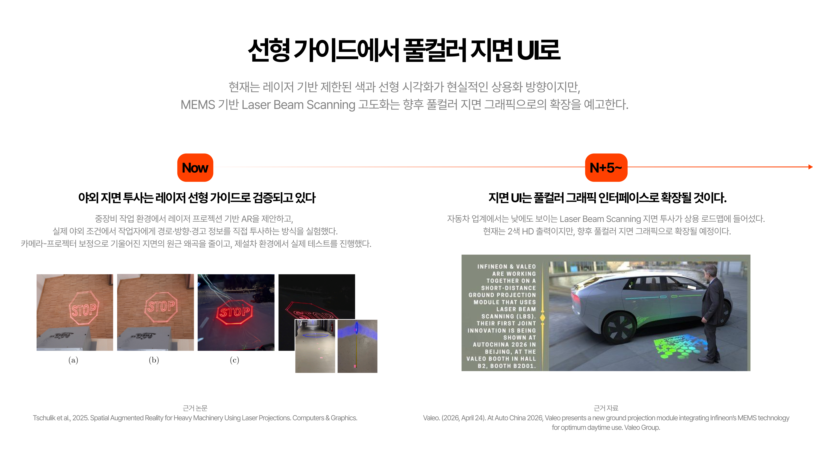
야외 지면 투사에서 가장 먼저 나오는 질문은 “밖에서도 보이냐”입니다. 이 질문은 맞지만, 밝기는 해결 불가능한 본질적 한계라기보다 기술이 풀어가고 있는 성능 조건에 가깝습니다.
2026년 Valeo와 Infineon은 MEMS 기반 Laser Beam Scanning 지면 투사 모듈을 공개했습니다. 주간 시인성을 위해 밝기, 대비, 해상도를 높였고, 향후 full-color 출력도 로드맵에 포함했습니다.[1][2] (Valeo)
NEWTON의 야외 지면 UI는 지금의 일반 빔프로젝터를 그대로 들고 나가는 상상이 아닙니다.2031+ 고휘도 지면 투사 기술이 운동 경험으로 들어왔을 때의 인터페이스입니다.

Scenario
Play with Newton!
NEWTON의 터치포인트 여정
Pack에서 시작해, 집과 밖의 움직임으로 확장되는 NEWTON 터치포인트
NEWTON의 집안과 집밖 운동은 같은 Pack에서 시작하지만, 접점은 장소에 따라 달라집니다. 앱은 운동을 고르는 입구가 되고, 운동이 시작되면 시선은 벽면과 지면의 단서로 이동합니다. 운동 중에는 앱을 보지 않으며 벽면·지면 UI, 음성, 햅틱, 하체 웨어러블 개입이 하나의 흐름으로 움직임을 이끕니다.
1. 집안 운동 흐름
집 안에서는 스테이션의 시그니처 사운드가 시작 신호가 됩니다. 사용자는 책상 위 투사 세팅 UI에서 Pack, Quiet 모드, 오늘 상태를 빠르게 정합니다. 착용이 완료되면 벽면에 시작 UI가 뜨고, 발 두 번 탭으로 운동이 시작됩니다. 이후에는 벽면 단서, 스피커 음성, 웨어러블 보조를 따라 움직입니다.
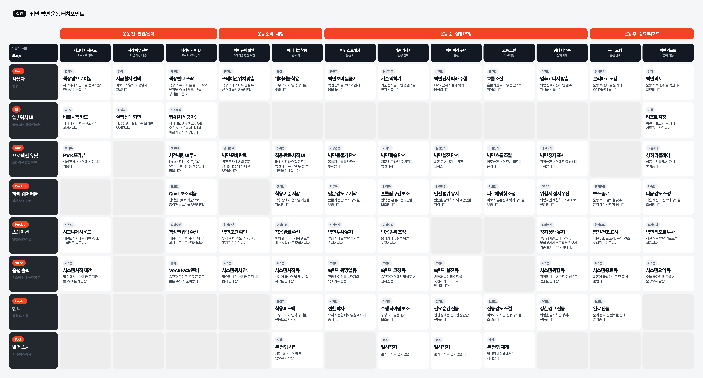
2. 집밖 운동 흐름
집밖에서는 App 피드와 저장한 Pack이 운동의 진입점이 됩니다. 이어폰과 웨어러블을 착용하면, 지면 UI에서 준비 완료와 핏 상태를 바로 확인합니다. 운동이 시작되면 시선은 지면의 리듬과 경로에 머뭅니다.숙련자 큐는 이어폰으로, 위험 안내는 시스템 음성으로 전달됩니다.
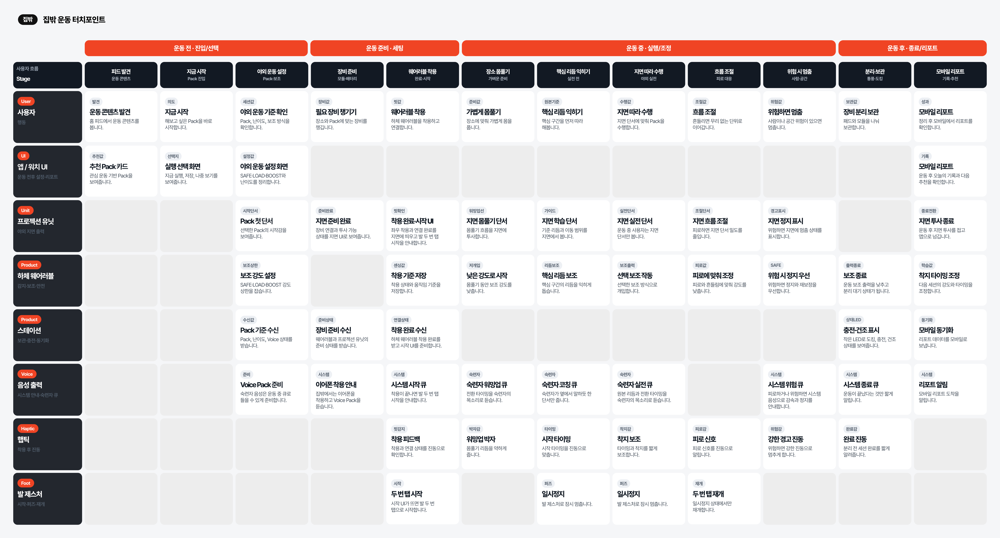
전체 시나리오 플로우
입문자의 도전 감정선을 따라 설계한 시나리오
뉴턴의 시나리오는 운동을 잘하는 사람보다, 이제 막 해보고 싶어진 사용자가 입문하고 도전을 이어가는 과정을 그립니다.
- 책상 앞에서 우연히 움직임을 발견하고,
- 집 안에서 짧게 따라 하며 작은 성공감을 얻습니다.
- 그 감각은 바깥 러닝으로 이어지고,
- 혼자 반복하는 과정에서 “나도 할 수 있겠다”는 자신감으로 커집니다.
- 마지막에는 친구와 함께 움직이며, 운동이 혼자 하는 루틴을 넘어 함께 즐기는 플레이로 확장됩니다.
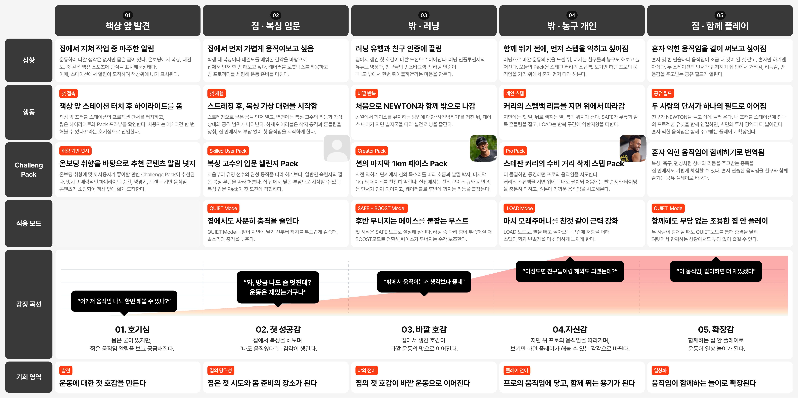
NEWTON User-facing 와이어프레임 (Mobile)
NEWTON User-facing IA & Wireframe
운동을 고르는 화면에서 끝나지 않고, 바로 몸으로 이어지는 정보 구조입니다. NEWTON의 IA는 사용자가 움직임을 발견하고, Pack을 저장하고, 오늘의 몸에 맞게 시작한 뒤, 스테이션과 웨어러블을 통해 실제 운동까지 자연스럽게 이어지도록 설계됩니다.
IA 모아보기
01 Mobile IA - 가볍게 시작하는 첫 기준, 온보딩 IA
첫 실행에서는 많은 정보를 묻지 않습니다. 사용자가 끌리는 운동, 시작 목표, 운동 환경만 가볍게 선택하고, 스마트폰 카메라로 기본 신체 기준을 만듭니다. 이렇게 만든 추천 프로파일은 이후 Home 피드, Pack 추천, 알림과 넛지의 기준이 됩니다.
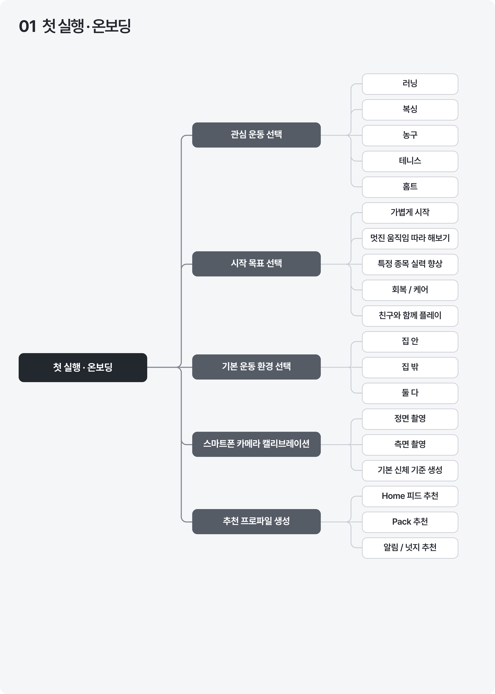
02 Mobile IA - 보고 싶던 움직임을 운동으로 바꾸는 App 구조
Home은 운동을 고르는 목록이 아니라, 먼저 움직임에 끌리게 만드는 피드입니다. 사용자는 숏츠와 하이라이트를 보며 Pack을 발견하고, 마음에 드는 움직임은 Keep으로 저장하거나 바로 시작할 수 있습니다. Packs는 저장한 Pack과 전체 Pack을 탐색하는 공간이고, Report는 다음 세션으로 돌아오게 만드는 기록의 입구가 됩니다.

03 Mobile IA - 오늘의 몸에 맞춰 시작하는 세팅 후 운동 시작!
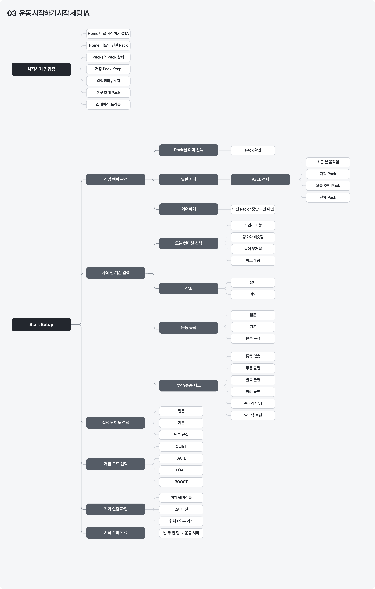
03 Station&Projection IA - 소리로 부르고, 터치하면 펼쳐지는 스테이션
스테이션은 먼저 시그니처 사운드로 사용자를 부릅니다. 영상은 자동으로 뜨지 않고, 사용자가 직접 스테이션 터치를 했을 때만 Pack 프리뷰가 투사됩니다. 추천 Pack, 저장 Pack, 이전 세션 이어하기, 친구 초대 Pack은 이 프리뷰 안에서 실행 가능한 제안이 되고, 운동이 시작되면 지면 UI, 벽면 UI, 음성·진동 큐, 안전 개입 표시가 스트레칭 → 사전 익히기 → 실전 운동 단계에 맞춰 펼쳐집니다.
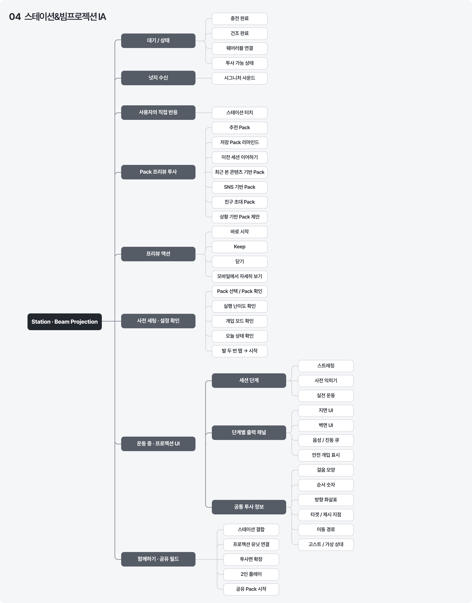
05 Lowerbody Robotics IA - 몸이 필요한 순간, 움직임이 달라지도록
하체 웨어러블은 사용자가 운동 중 바로 알아야 할 몸의 상태와 변화를 중심으로 정리됩니다. 착용 상태, 모드 상태, 안전 알림, 개입 상태, 퀵스톱 안내만 남겨, 기술 설명보다 지금 몸에 어떤 변화가 일어나는지를 먼저 보여줍니다. QUIET, SAFE, LOAD, BOOST 4가지 모드는 설명이 아니라, 운동 중 몸으로 느껴지는 감속, 안정, 부하, 추진의 상태로 전달됩니다.
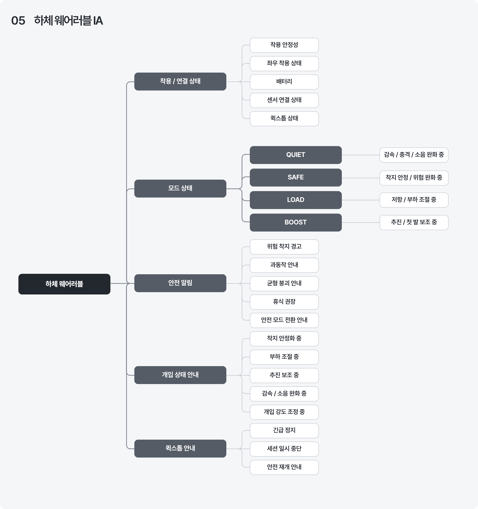
01 온보딩 - 나를 이해하고, 맞춤 Pack을 준비하는 온보딩
관심 운동과 시작 목표, 주로 운동하는 환경을 차례로 확인합니다. 캘리브레이션으로 신체 기준까지 맞춰, 처음부터 나에게 적합한 Pack과 움직임 가이드를 제안할 수 있는 개인화 기반을 만듭니다.

02 홈& Packs -바로 시작하고, 끌리는 플레이를 발견하는 Home & Packs
Home은 온보딩 정보와 누적된 사용 데이터를 바탕으로 지금 나에게 맞는 Pack을 먼저 추천해 곧바로 실행으로 연결합니다. Packs에서는 숏폼 피드처럼 하이라이트 중심으로 콘텐츠를 탐색하고, 관심 가는 움직임을 저장하거나 바로 시작할 수 있습니다.
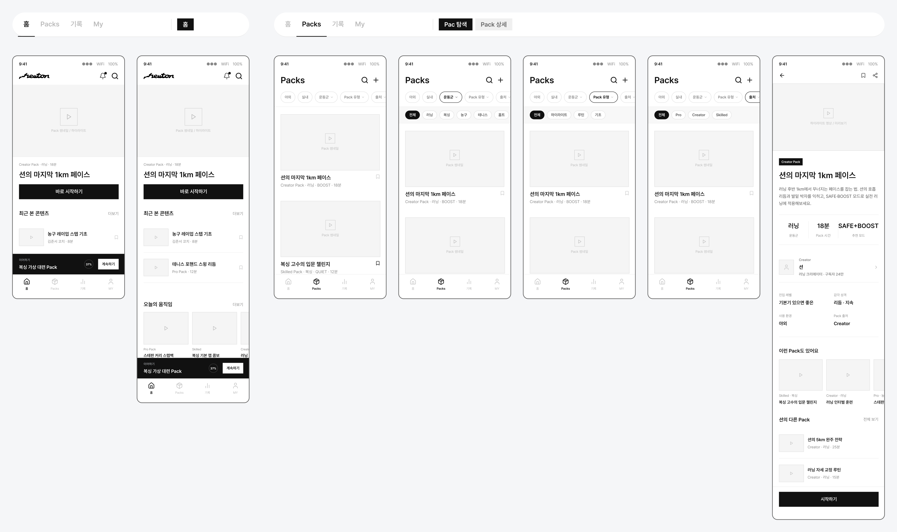
03 기록 & My -쌓인 변화를 확인하고, 다시 시작하는 Records & My
Records는 세션마다 쌓인 데이터를 신체 그래픽과 핵심 지표로 보여주어, 좋아진 부분과 보완할 부분을 한눈에 이해하도록 합니다. My에서는 저장하거나 직접 만든 Pack에 빠르게 접근해 다시 실행하고, 프로필과 기기 설정도 함께 관리할 수 있습니다.
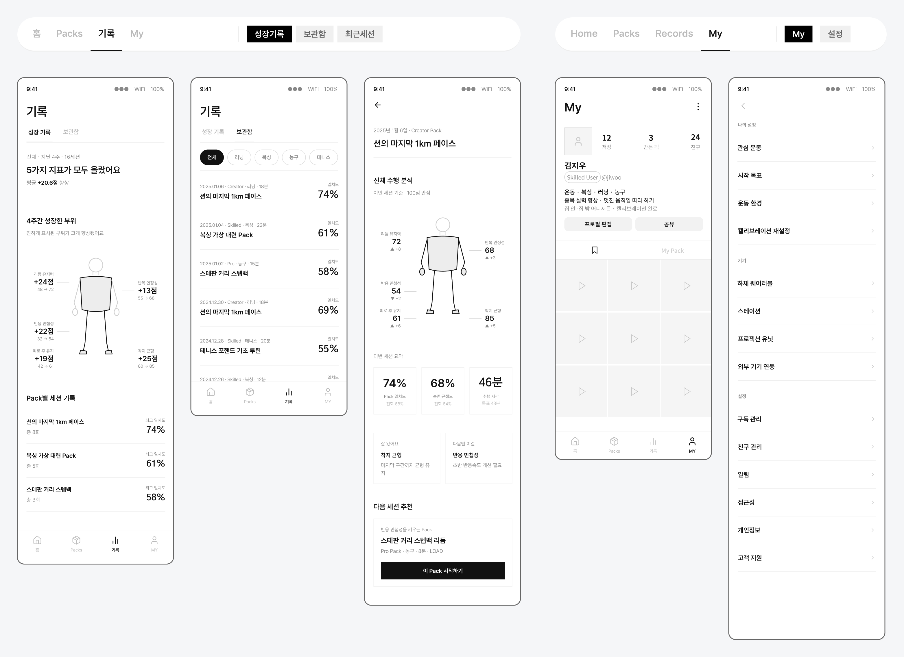
04 시작 세팅 & 직전 확인 - 오늘의 상태에 맞춰 준비를 끝내는 Start Setup
Pack을 선택한 뒤 장소와 목표, 컨디션, 불편 부위, 난이도와 개입 모드를 확인해 오늘의 몸과 환경에 맞게 세션을 조정합니다. 마지막으로 기기 연결과 최종 설정을 점검한 뒤, 휴대폰을 내려놓고 발을 두 번 탭해 운동을 시작합니다.
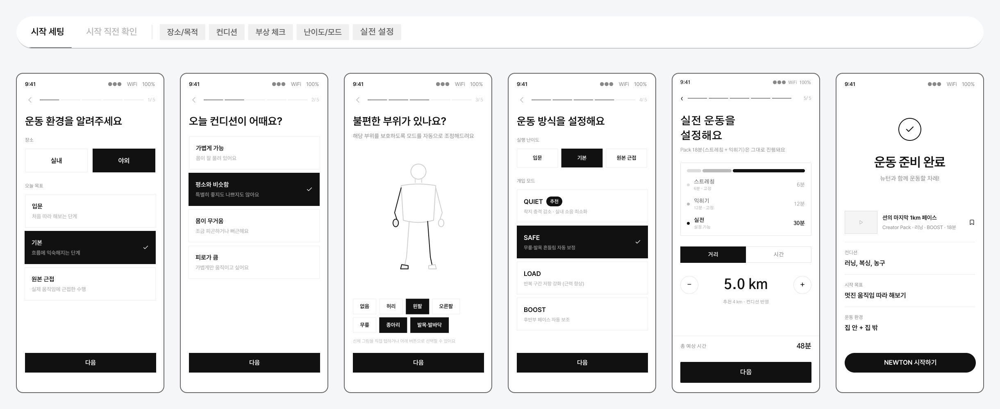
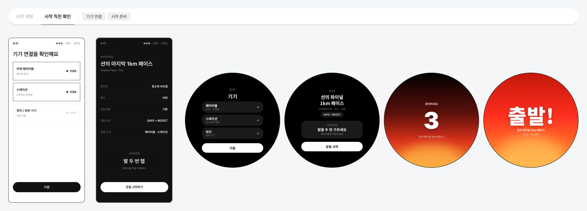
(1) A Spark to Move
마음이 먼저 움직이는 순간
책상 앞에 오래 앉아 굳어 있던 몸 앞에, 포터블 스테이션은 지금 끌릴 만한 Challenge Pack을 짧게 띄웁니다. 어릴 때 배워봤던 복싱의 회피 스텝과 짧은 풋워크 하이라이트가 집 안에 펼쳐지고, 투사된 시작 버튼은 다시 움직여보고 싶은 마음을 당깁니다. 누르는 순간, 운동은 해야 할 일이 아니라 지금 바로 시작해보고 싶은 도전이 됩니다
운동을 마음먹게 시작하는 뉴턴의 넛지 설계
NEWTON 넛지 설계
NEWTON은 관심 운동, 저장한 Pack, 최근 본 콘텐츠, 중단한 세션과 생활 패턴을 바탕으로 추천을 만듭니다. 시간,장소,활동량,날씨까지 함께 판단해 지금 실행하기 좋은 Pack만 제안합니다.
01 두가지 진입점
NEWTON이 먼저 제안하거나 내가 고르거나
앱을 탐색하지 않는 순간에는 관심 운동, 저장·시청 기록, 이전 세션을 바탕으로 개인화 알림이 적절한 Pack을 먼저 제안합니다. 콘텐츠 탭에서는 원하는 움직임을 직접 탐색해 Pack을 시작합니다.
02 생활 속 접점
책상에서 준비하고, 현관에서 행동으로
책상에서는 추천 Pack을 확인하고 운동 직전 설정을 마칩니다. 현관에서는 외출 및 귀가 상황에 맞춰 실내외 운동을 제안하며, 웨어러블 착용과 발 두 번 탭까지 이어 실제 시작으로 전환합니다.
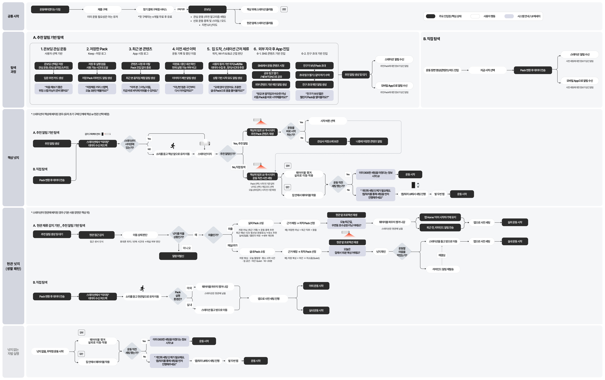

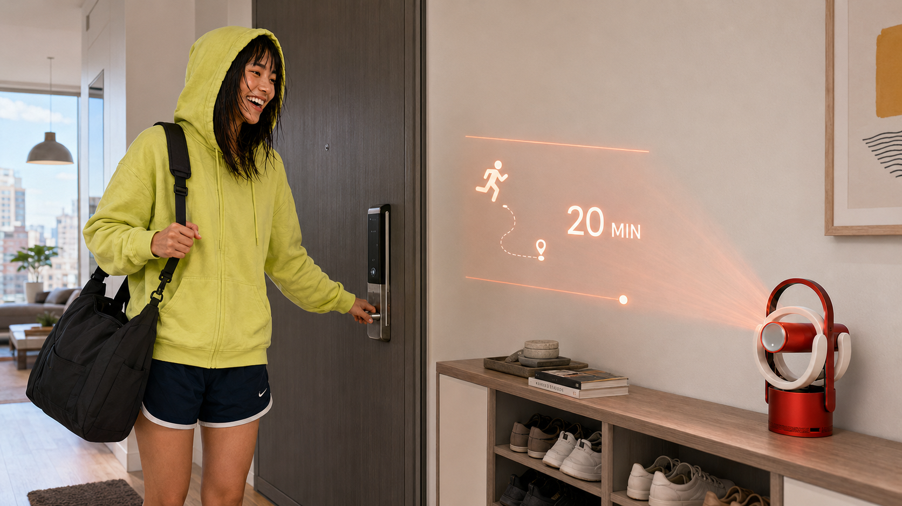
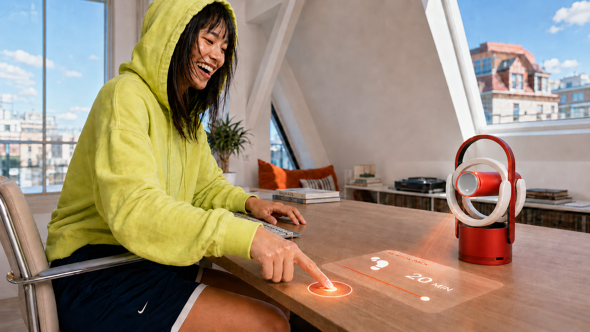
(2) Step by Step, Into Play
처음의 한 걸음은, 집에서도 충분하니까
Pack을 고르면, 방 안의 벽면이 조용한 링으로 바뀝니다. 굳은 몸을 스트레칭으로 열고, Quiet On으로 발소리와 충격을 낮춥니다. 벽에는 복싱 고수의 리듬과 가상 상대의 공격 범위가 펼쳐지고, 한 발 피하고 다시 들어가며 짧은 스파링을 시작합니다. 소음 부담 없이 완성한 첫 움직임은, 또 다른 도전을 해보고 싶은 재미로 이어집니다.
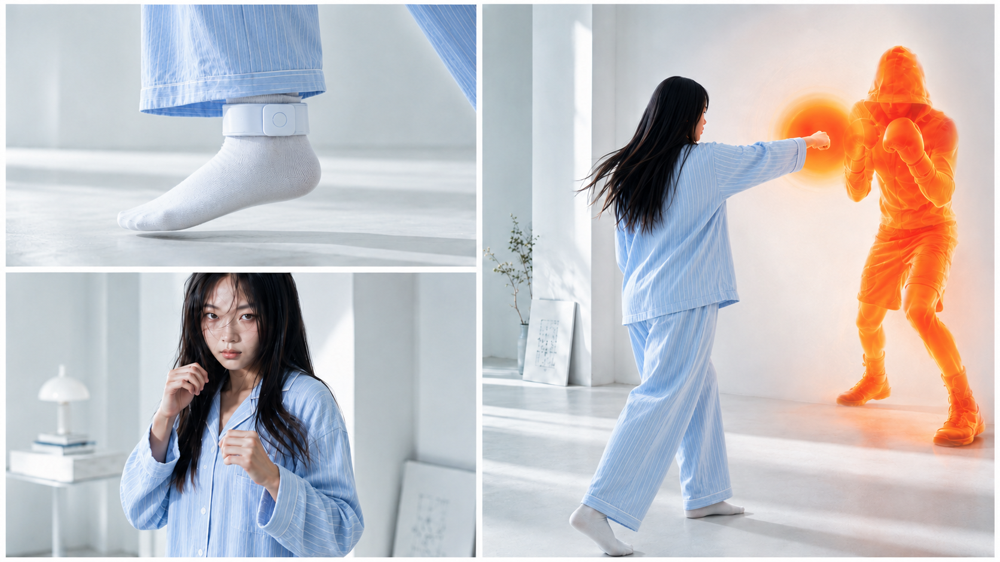
한번 움직인 마음은,
바깥으로 이어진다
집에서 한 번 움직여본 감각은, 피드 속 러닝을 그냥 넘기지 못하게 만듭니다. 오늘의 Pack은 션과 함께 달리는 러닝메이트. NEWTON은 발밑에 페이스와 박자를 안내하고, 리듬이 꺼질 때는 Boost On으로 다음 한 발을 밀어줍니다. 피드에서 보던 러닝이 오늘 내 거리로 넘어오는 순간, 운동은 루틴이 아니라 따라가고 싶은 바깥 플레이가 됩니다.
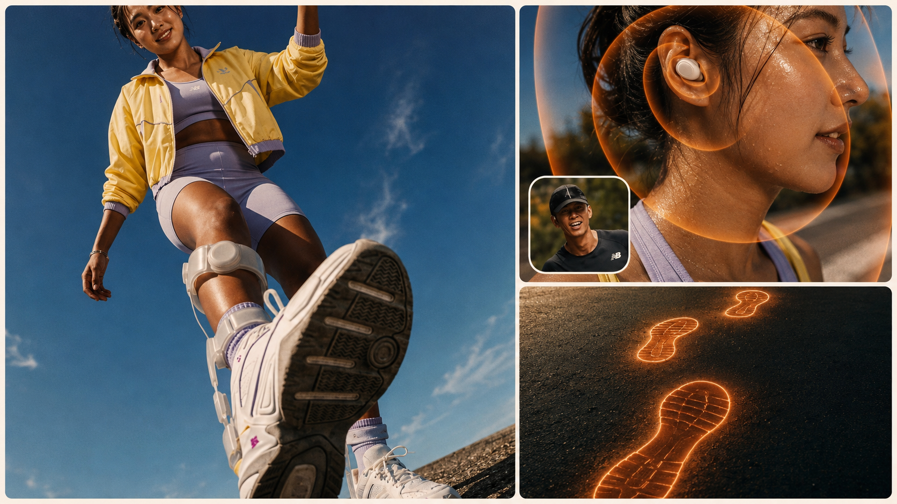
혼자 익힌 리듬이,
함께 움직일 자신감으로
혼자 달리던 몸은 이제 함께 움직이는 재미를 궁금해합니다. 오늘의 Pack은 스테판 커리의 스텝백. NEWTON은 첫 발, 백스텝, 복귀 리듬을 지면 위에 띄우고, Press On은 발을 빼고 돌아오는 순간에 묵직한 저항을 더해 순발력을 깨웁니다. 혼자 익힌 리듬이 쌓이면, 보기만 하던 플레이는 해볼 수 있는 감각이 됩니다. 그 감각은 친구들과 함께 움직여볼 자신감으로 이어집니다.
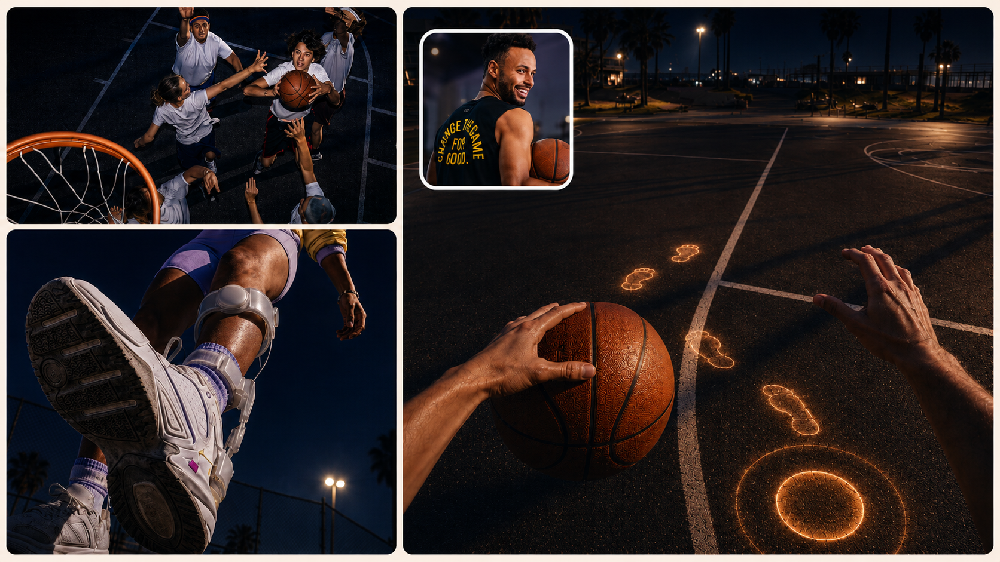
혼자 익힌 설렘이,
함께 하는 재미가 되어
혼자 익힌 리듬은, 함께할 때 더 재밌어집니다. NEWTON의 빔프로젝터를 나란히 두는 순간, 거실은 둘만의 플레이 스테이지로 넓어집니다. 커진 투사면 안에서 서로의 움직임이 맞물리고, 운동은 게임처럼 가볍게 이어집니다. 혼자 쌓은 자신감은 친구와 주고받는 리듬이 되고, 연습은 함께 즐기는 플레이가 됩니다.
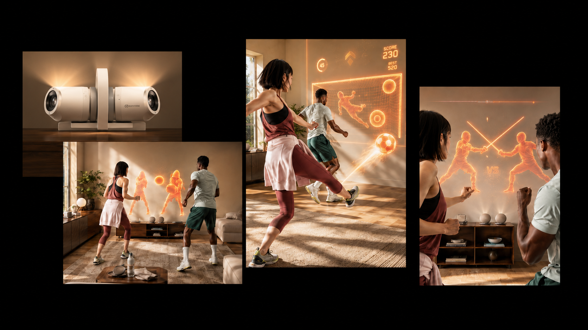
(3) From Movement to Momentum
오늘의 두근거림을, 다음 도전으로
움직임이 끝난 뒤에도, NEWTON은 다음 플레이를 준비합니다. 오늘의 리듬과 흔들렸던 순간은 리포트로 남아 다음 도전의 단서가 됩니다. 하체 웨어러블은 다시 충전되고, 패브릭 파츠는 산뜻하게 관리됩니다. 오늘의 플레이는 그렇게 다음 움직임으로 이어집니다.
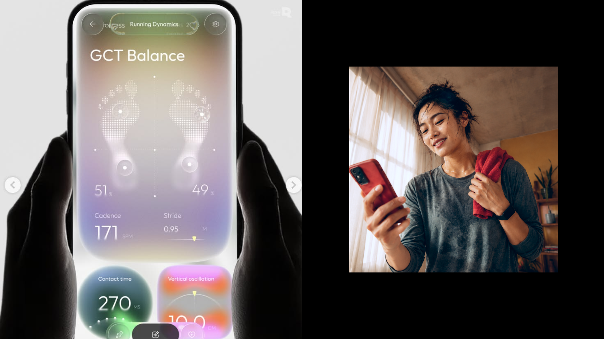
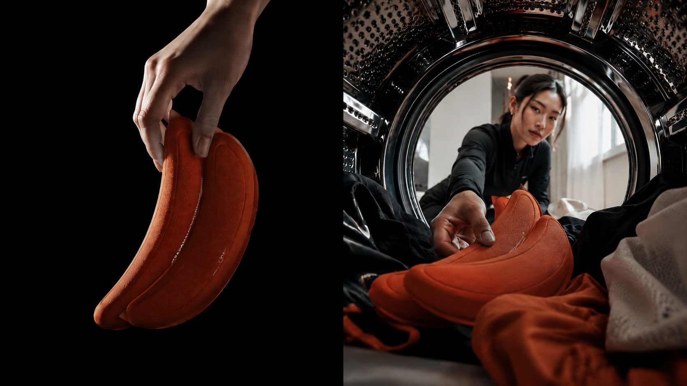
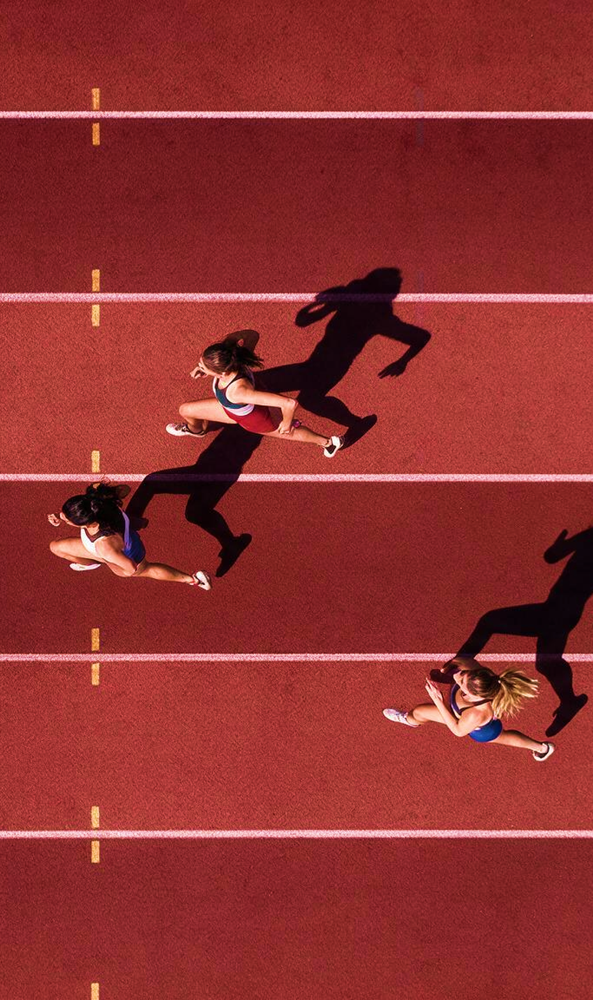
Extensibility
Now, Every Turn is Yours.
NEWTON은 스포츠를 시작하고 도전하는 경험에서 출발합니다.
하지만 핵심은 하나의 종목이 아니라, 낯선 움직임을 내 몸의 속도로 시작하게 하는 구조에 있습니다. 이 구조는 러닝, 복싱, 농구를 넘어 균형을 배우고 다시 걷는 감각을 회복하는 순간까지 확장될 수 있습니다. 누구나 자신의 차례를 믿고, 새로운 움직임에 도전할 수 있도록.
1 / 12
100%